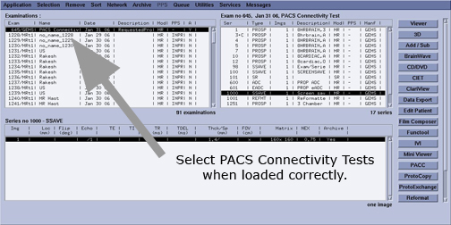

Illustration 2: Image Browser

These series offer a cross section of new features and DICOM types in the 12.0 release. A single exam will be installed into the database and can be viewed in the Browser. This exam consists of several series:
Series 1: 3 Plane Localizer: 1 image.
Series 3: Lx LAVA: 1 image.
Series 4: MR Echo: 1 image.
Series 7: T2Flair Propeller: 1 image.
Series 10: Prose: 1 image.
Series 300: IVI PJN of series 3 (LAVA): 1 image.
Series 301: IVI RFMT of series 3 (LAVA): 1 image.
Series 450: MR Echo Bookmark: 1 image.
Series 800: DW Propeller ADC: 1 image.
Series 801: DW Propeller eADC: 1 image.
Series 900: Functool Color SSAVE of series 10 (Prose): 1 image.
Series 902: Prose Structured Report.
Series 1300: MR Echo Scan and Save:1 image.
Series 11300: GSPS of series 1300.